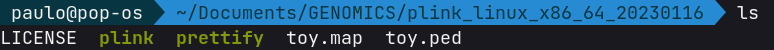
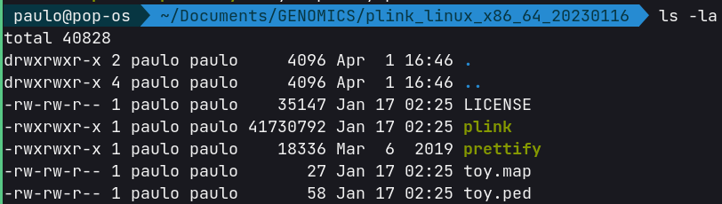

Rodando o PLINK
Meu sistema operacional é o Pop_OS!, uma distro Linux. Mesmo possuindo uma interface gráfica, muitos dos comandos e prints de tela que vocês verão nos exemplos serão executados em terminal já que em muitas das vezes a depender do volume de dados, as análises são realizadas em servidores com um maior poder computacional. Estes computadores muito provavelmente estarão rodando alguma versão de servidor do Linux sem uma interface gráfica, então é mais útil que vocês já se familiarizem com os comandos de terminal.
Vou adotar sempre o mesmo esquema, o bloco de código com o comando utilizado, seguido pela saída do comando no terminal. Por exemplo:
E logo abaixo a resposta daquele comando.
.
├── folder1
└── folder2
Quando fazemos o download do PLINK 1.9 observamos os seguintes arquivos:
.
├── LICENSE -> arquivo de licença do PLINK
├── plink -> executável do PLINK
├── prettify -> utilitário para gerar tabelas formatadas
├── toy.map -> arquivo .MAP de exemplo
└── toy.ped -> arquivo .PED de exemploPodemos usar o terminal para ver a cara do aquivo de genótipo e de mapa usando o comando cat para imprimir o arquivo na tela do terminal.
1 1000000000 0 0 1 1 0 0 A A
1 1000000001 0 0 1 2 C C A G
Como podemos ver o arquivo de exemplo possui as seis colunas iniciais de um arquivo .ped, seguidas dos genótipos de dois marcadores codificados como bases nucleotídicas. Já no arquivo .map vamos observar quatro colunas e duas linhas, referentes aos dois marcadores no nosso arquivo de genótipo.
1 rs0 0 1000
1 rs10 0 1001Invocando o executável
O arquivo plink é um arquivo binário que não requer instalação, basta a sua invocação seguido das opções de comando para que ele execute alguma função.

Observe na Figura 1 que as cores são diferentes para os dois arquivos binários plink e prettify quando comparados aos arquivos .map e .ped. Isso porque que os arquivos possuem permissão de execução. O comando ls no linux lista os arquivos em um diretório. Caso no seu diretório estes arquivos não apareçam marcados com cores diferentes, você pode utilizar o comando ls -la para listar as atuais permissões dos arquivos.

Observe que tanto o plink quanto prettify estão setados com as permissões -rwxrwxr-x paulo. Em resumo, as letras r, w e x referem-se respectivamente aos modos de leitura (read), escrita (write) e execução (execution). Caso necessite fornecer permissão de execução para o binário do plinkpode fazer com o comando abaixo:
E como não custa nada lembrar Material Introdução ao Linux
Rodando arquivos exemplo
Tudo certo com nossas permissões, podemos então executar o PLINK pela primeira vez. Para isso basta chamar invocar o executável no terminal. Em Linux, quando desejamos rodar algum executável, seja um binário ou arquivo de script, basta utilizar ./ antes do nome do comando para invocar a sua execução. No nosso caso utilizaremos ./plink no terminal para sua execução.
PLINK v1.90b7 64-bit (16 Jan 2023) www.cog-genomics.org/plink/1.9/
(C) 2005-2023 Shaun Purcell, Christopher Chang GNU General Public License v3
plink <input flag(s)...> [command flag(s)...] [other flag(s)...]
plink --help [flag name(s)...]
Commands include --make-bed, --recode, --flip-scan, --merge-list,
--write-snplist, --list-duplicate-vars, --freqx, --missing, --test-mishap,
--hardy, --mendel, --ibc, --impute-sex, --indep-pairphase, --r2, --show-tags,
--blocks, --distance, --genome, --homozyg, --make-rel, --make-grm-gz,
--rel-cutoff, --cluster, --pca, --neighbour, --ibs-test, --regress-distance,
--model, --bd, --gxe, --logistic, --dosage, --lasso, --test-missing,
--make-perm-pheno, --tdt, --qfam, --annotate, --clump, --gene-report,
--meta-analysis, --epistasis, --fast-epistasis, and --score.
"plink --help | more" describes all functions (warning: long).
Ao invocar o PLINK sem nenhuma das suas flags, ele simnplesmente exibe na tela uma rápida ajuda do programa, mostrando algumas das flags aceitas e também como invocar a ajuda do programa. Podemos então fazer a leitura dos arquivos de exemplo toy.ped e toy.map.
PLINK v1.90b7 64-bit (16 Jan 2023) www.cog-genomics.org/plink/1.9/
(C) 2005-2023 Shaun Purcell, Christopher Chang GNU General Public License v3
Logging to toy_analysis.log.
Options in effect:
--file toy
--freq
--out toy_analysis
15880 MB RAM detected; reserving 7940 MB for main workspace.
.ped scan complete (for binary autoconversion).
Performing single-pass .bed write (2 variants, 2 people).
--file: toy_analysis-temporary.bed + toy_analysis-temporary.bim +
toy_analysis-temporary.fam written.
2 variants loaded from .bim file.
2 people (2 males, 0 females) loaded from .fam.
2 phenotype values loaded from .fam.
Using 1 thread (no multithreaded calculations invoked).
Before main variant filters, 2 founders and 0 nonfounders present.
Calculating allele frequencies... done.
Total genotyping rate is 0.75.
--freq: Allele frequencies (founders only) written to toy_analysis.frq .
Algumas informações importantes nesta nova saída. O PLINK agora informa quais opções foram invocadas:
Options in effect:
--file toy
--freq
--out toy_analysis
As opções utilizadas foram --file , --freq e --out. Tudo o que é seguido de um comando, chamamos de parâmetro. Por exemplo, o comando --file é seguido do parâmetro toy, assim como o comando --out é seguido do parâmetro toy_analysis. Nem todo comando obrigatoriamente necessita de um parâmetro subsequente, como é o caso do comando --freq. Vamos tentar entender agora o que cada comando significa neste exemplo.
--file toy: este comando diz ao PLINK para utilizar os arquivos de entrada na pasta. No nosso caso possuímos dois arquivostoy.pedetoy.map, como o nome do arquivo é idêntico alterando somente a sua extenção, o comando automaticamente busca estes arquivos na pasta e faz a sua leitura.--freq: este comando informa ao PLINK para gerar um relatório de frequências alélicas. A documentação do plink [1] oferece a descrição de todas as funções disponíveis, e também as configurações dos arquivos de saída para cada função.--out: por padrão, todos os arquivos de resultado do PLINK são nomeadosplink.alguma_extensao, o paramertrotoy_analysisdiz ao plink para alterar este padrão, dessa maneira o resultado será nomeadotoy_analysis.alguma_extensao, por exemplo, no caso da análise que acabamos de executar, será criado o arquivotoy_analysis.frq, já que.frqé a extensão padrão da saída do comando--freq.
Existem modificadores que podem ser utilizados em conjunto com os comandos, para saber a maneira correta de utilização basta recorrer a documentação.
Arquivos de Saída
Se tudo correu bem, devemos ter na nossa pasta novos arquivos gerados pelo PLINK
.
├── LICENSE
├── plink
├── prettify
├── toy_analysis.frq
├── toy_analysis.log
├── toy.map
└── toy.ped
Agora aparecem no nosso diretório os arquivos toy_analysis.frq, que é o arquivo de saída do comando --freq e o arquivo toy_analysis.log. Vamos dar uma olhada mais de perto no arquivo da nossa análise das frequências alélicas.
CHR SNP A1 A2 MAF NCHROBS
1 rs0 0 C 0 2
1 rs10 G A 0.25 4O nosso arquivo de resultado nos mostra:
CHR: o identificador do cromossomoSNP: o identificador do SNPA1: o alelo menorA2: o alelo maiorMAF: a frequência do alelo menor (minor allele frequency)NCHROBS: o numero de alelos observados por SNP
Na documentação é possível encontrar outras formas de pedir o cálculo das frequências alélicas.
Você pode abrir o arquivo toy_analysis.log no seu editor de texto e verá que ele é um registro de todas as mensagens que o PLINK exibiu no terminal durante a execuçào. Esse arquivo é muito importante na hora de identificar erros na leitura de arquivos, ou na execução de comandos, esteja sempre atento as mensagens!
Tranquilo até aqui? Nas próximas seções vamos trabalhar chips SNPs disponíveis na internet e realizar análises mais aprofundadas. Em cada caso, será informado o dataset que estaremos utilizando para as análises, bem como informações de download e especificações. Todos os dados utilizados aqui estão públicos disponíveis na internet.
Referências